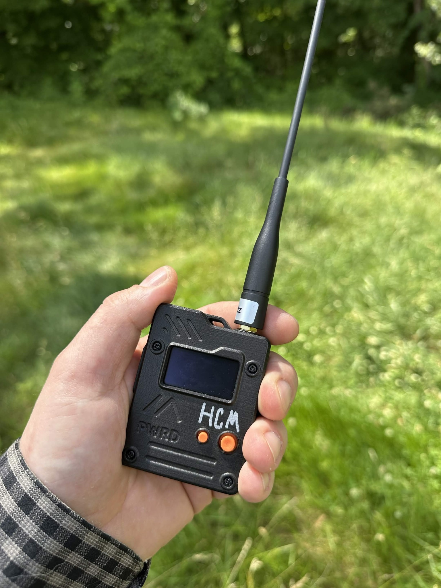

Coverage is being learned through real-world use: bringing nodes along, checking what they hear, noticing what works, and sharing useful notes from the places people actually live, work, travel, and gather.

Hampden County has hills, valleys, wooded areas, dense neighborhoods, old brick buildings, river corridors, highways, campuses, hospitals, parks, and rural edges. Radio coverage changes across all of that.
A device that works from one hilltop may not work from a nearby low spot. A node near a window may behave differently than the same node inside a building or vehicle.
Checking coverage helps the community learn what actually works here, not just what should work on paper.
How to Check CoverageTake a node with you while walking, driving, visiting a park, stopping at a library, or checking a public overlook.
Read the coverage guide →Fixed nodes, repeaters, observers, window placements, tree mounts, vehicle setups, and temporary test points are easier to understand when someone writes down the basics.
Document a node →See what this site currently maintains, what activity tools are still being developed, and what information should be treated as incomplete.
View systems →Ask questions, share observations, compare setups, and connect with people interested in local radio and mesh networking.
Join Discord →Parks, streets, workplaces, hilltops, libraries, campuses, vehicles, neighborhoods, and community spaces all teach different things.
Failed connections and quiet areas are useful. Knowing where something does not work helps people understand the local terrain.
General areas are usually enough. Do not expose private addresses, private property, or someone else’s exact location without permission.
Coverage changes with antenna placement, firmware, weather, power, foliage, and new infrastructure. Trying again later matters.
This site currently maintains a small amount of supporting infrastructure: a MeshCore Room Observer, a Linux-based MeshCore-Hub, and local tools for logging, checking, and understanding mesh activity.
These systems are one contribution to the broader local mesh and radio community. They help with learning, documentation, and future public activity tools, but they are not a complete picture of everything happening in Hampden County.
Public activity tools are still in development. Future activity views should help people see nearby mesh activity, understand what may be reachable, and compare notes with others interested in local radio and mesh networking.
Have a signal check, node note, observer update, useful public test location, or correction to this page?
HampdenCountyMesh@protonmail.com
You can also share notes in the community Discord from the homepage.